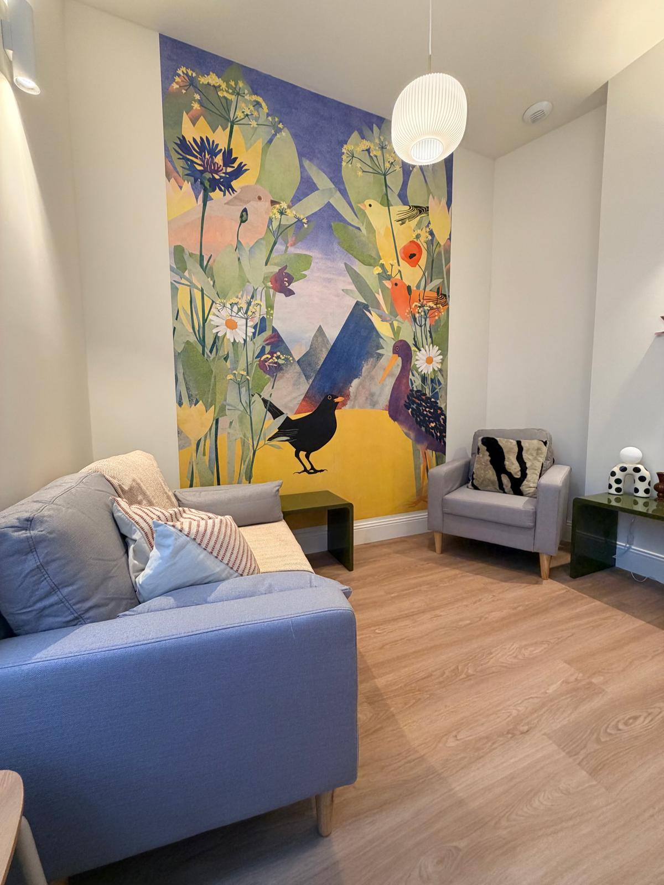
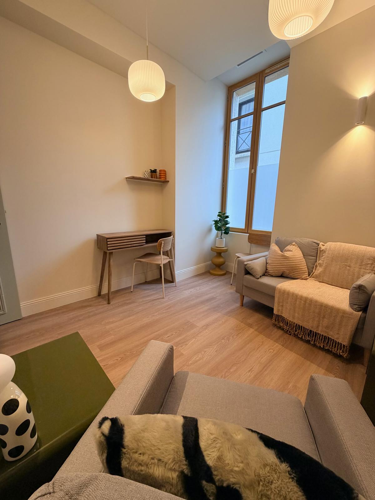
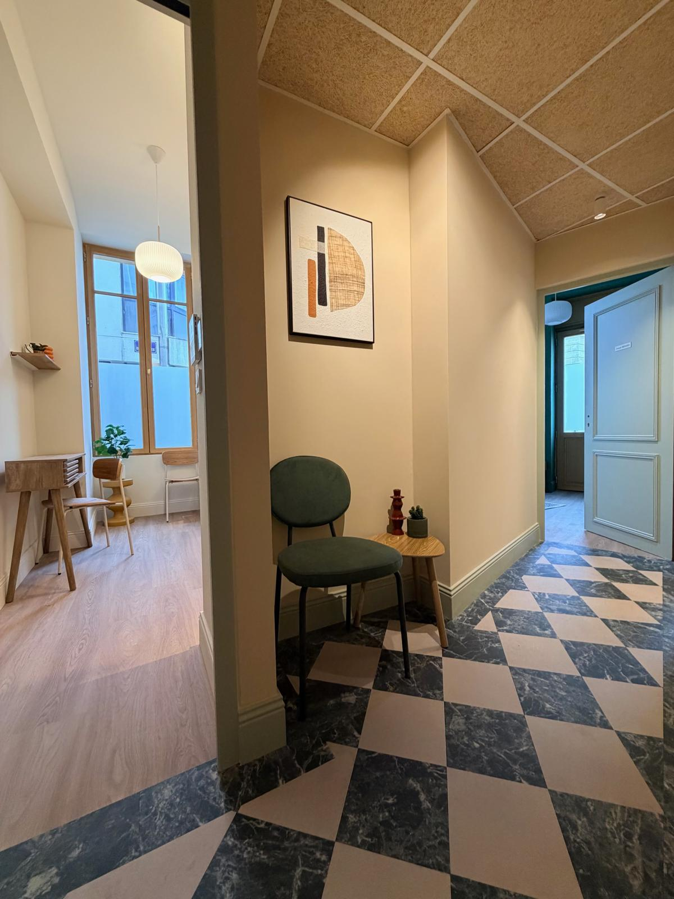

P S Y C H O L O G U E C L I N I C I E N N E
Un accompagnement psychologique adapté à chaque parcours de vie, avec une attention particulière au vieillissement, à l'évaluation cognitive et aux dimensions interculturelles.
Évaluation et accompagnement psychologique des difficultés liées au vieillissement et aux changements cognitifs.
Un espace d'écoute et de soutien pour les proches qui accompagnent une personne âgée, face aux défis émotionnels, pratiques et relationnels.
Un soutien pour les personnes vivant entre plusieurs cultures, en lien avec les questions d'identité, d'adaptation ou de séparation.
Un accompagnement dans les différentes formes de perte, afin de traverser ces moments et de retrouver de nouveaux repères.
Un accompagnement pour les difficultés émotionnelles qui peuvent affecter le quotidien à différents moments de la vie.
Je suis Pelinsu Polat, psychologue clinicienne.
J'ai débuté mon parcours universitaire à l'Université de Bordeaux, où j'ai obtenu ma licence, avant de poursuivre mes études en psychologie clinique à l'Université Sorbonne Paris Nord, avec un Master 2 de Psychologie clinique et psychopathologie, parcours interculturel et transculturel.
J'accompagne principalement des jeunes adultes, des adultes et des personnes âgées.
Mon parcours clinique m'a permis de développer un intérêt particulier pour les problématiques liées au vieillissement, mais également pour le traumatisme, la dépression, le trouble bipolaire, le deuil et les expériences de perte, domaines autour desquels j'ai également suivi des formations complémentaires.
Ma pratique tient compte de l'histoire, du contexte de vie et de la singularité de chaque personne.
20 COURS SAINT LOUIS
33300 BORDEAUX
Lundi et samedi
8h30 – 20h00
Consultation individuelle : 60 €
Bilan cognitif gériatrique : 250 €
Sur Doctolib, par e-mail ou par téléphone.



Pour toute question ou prise de rendez-vous, n'hésitez pas à me contacter.